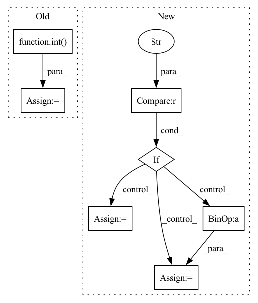

Pattern ID :8047
Before Change
if data_path[-1]=="\n":
data_path=data_path[:-1]
if self.cls_num == 2:
cls = 1 - int( data_path.split("/")[-1][0] == "c" or data_path.split("/")[-1][1] == "." or
data_path.split("/")[-3] == "ILD")
elif self.cls_num==4:
if "healthy" in data_path:
cls = 0
elif "cap" in data_path:After Change
if data_path[-1]=="\n":
data_path=data_path[:-1]
if self.cls_num == 2:
if self.mod=="ab" ://abnormal detection
cls = int("pos" in data_path)
else:
cls = 1- int("ild" in data_path or "cap" in data_path)
elif self.cls_num==3:
if "healthy" in data_path:
cls = 0In pattern: SUPERPATTERN
Frequency: 4
Non-data size: 7
Instances Fragment ID: 28566754
Project Name: chenwwweixiang/opencoviddetector
Commit Name: 8909104cb57ef877076c775372e08b8538243526
Time: 2020-04-18
Author: chenwx_thu@foxmail.com
File Name: data/dataset.py
M Class Name: NCPJPGtestDataset_new
N Class Name: NCPJPGtestDataset_new
M Method Name: __getitem__(2)
N Method Name: __getitem__(2)
M Parent Class: Dataset
N Parent Class: Dataset
M File Name: data/dataset.py
N File Name: data/dataset.py
M Start Line: 768
M End Line: 784
N Start Line: 781
N End Line: 797
Before Change
if data_path[-1]=="\n":
data_path=data_path[:-1]
if self.cls_num==2:
cls= 1-int( data_path.split("/")[-1][0]=="c" or data_path.split("/")[-1][1]=="." or
data_path.split("/")[-2]=="masked_ild")
elif self.cls_num==4:
if "healthy" in data_path:
cls = 0
elif "cap" in data_path:After Change
if data_path[-1]=="\n":
data_path=data_path[:-1]
if self.cls_num==2:
if self.mod=="ab" ://abnormal detection
cls = int("pos" in data_path)
else:
cls = 1- int("ild" in data_path or "cap" in data_path)
elif self.cls_num==3:
if "healthy" in data_path:
cls = 0 Fragment ID: 28566759
Project Name: chenwwweixiang/opencoviddetector
Commit Name: 8909104cb57ef877076c775372e08b8538243526
Time: 2020-04-18
Author: chenwx_thu@foxmail.com
File Name: data/dataset.py
M Class Name: NCPJPGDataset_new
N Class Name: NCPJPGDataset_new
M Method Name: __getitem__(2)
N Method Name: __getitem__(2)
M Parent Class: Dataset
N Parent Class: Dataset
M File Name: data/dataset.py
N File Name: data/dataset.py
M Start Line: 695
M End Line: 709
N Start Line: 696
N End Line: 710
Before Change
for row in reader:
row_time = datetime.strptime(row["Timestamp"], "%Y-%m-%d %H:%M:%S")
if ((now - row_time).seconds / 60) < interval:
violations += int( row["ViolatingObjects"])
if violations > threshold:
// send notification
if should_send_email:
ms = MailService(config)After Change
today = str(date.today())
violations = 0
if entity_type == "Camera" :
file_paths = [os.path.join(log_dir, entity_info["id"], "objects_log", today + ".csv")]
else:
// entity_type == "Area"
camera_ids = entity_info["cameras"]
file_paths = [os.path.join(log_dir, camera_id, "objects_log", today + ".csv") for camera_id in camera_ids]
for file_path in file_paths: Fragment ID: 28566774
Project Name: neuralet/smart-social-distancing
Commit Name: cc83a5359249689566aff454deb74f361ee3c432
Time: 2020-10-23
Author: 42361379+renzodgc@users.noreply.github.com
File Name: libs/utils/notifications.py
M Class Name: AnonimousClass
N Class Name: AnonimousClass
M Method Name: check_violations(7)
N Method Name: check_violations(7)
M Parent Class:
N Parent Class:
M File Name: libs/utils/notifications.py
N File Name: libs/utils/notifications.py
M Start Line: 11
M End Line: 32
N Start Line: 23
N End Line: 46
Before Change
pyramid_levels.append(level)
stride_hh, stride_ww = feature_sizes[0][0] / feature_sizes[level][0], feature_sizes[0][1] / feature_sizes[level][1]
cur_num_anchors = tf.math.ceil(input_shape[0] / stride_hh) * tf.math.ceil(input_shape[1] / stride_ww)
total_anchors -= int( cur_num_anchors)
level += 1
return pyramid_levels
After Change
feature_sizes = get_feature_sizes(input_shape, [pyramid_levels_min, pyramid_levels_min + 10])[pyramid_levels_min:]
feature_sizes = tf.convert_to_tensor(feature_sizes, dtype="int32")
num_anchors_at_each_level_cumsum = tf.cumsum(tf.reduce_prod(feature_sizes, axis=-1))
if num_anchors == "auto" :
// Pick from [1, 3, 9], 1 for yolox, 3 for yolor, 9 for efficientdet
picks = tf.convert_to_tensor([1, 3, 9], dtype=tf.int32)
max_anchors = num_anchors_at_each_level_cumsum[-1] * picks
num_anchors = picks[tf.argmax(total_anchors < max_anchors)]
total_anchors = total_anchors // num_anchors
pyramid_levels_max = pyramid_levels_min + tf.argmax(num_anchors_at_each_level_cumsum > total_anchors) - 1 Fragment ID: 28566767
Project Name: leondgarse/keras_cv_attention_models
Commit Name: df3cf1ce0ac4b02a9c73496b1a583b9a892c7b0a
Time: 2022-03-25
Author: leondgarse@gmail.com
File Name: keras_cv_attention_models/coco/anchors_func.py
M Class Name: AnonimousClass
N Class Name: AnonimousClass
M Method Name: get_pyramid_levels_by_anchors(4)
N Method Name: get_pyramid_levels_by_anchors(4)
M Parent Class:
N Parent Class:
M File Name: keras_cv_attention_models/coco/anchors_func.py
N File Name: keras_cv_attention_models/coco/anchors_func.py
M Start Line: 101
M End Line: 112
N Start Line: 103
N End Line: 114